A front porch deserves more than a single lonely wreath and a strand of lights that's tangled beyond recognition. These 28 Christmas porch ideas can help turn your entrance into something that actually feels warm, festive, and connected to the rest of your home.
The porch sets the mood before anyone even reaches your front door. You don't need a massive porch, a big budget, or enough decorations to fill a storage unit to pull this off. A few well-chosen layers, placed thoughtfully, do most of the work.
Greenery, lighting, texture, color, and scale are the five elements that make this work. Once those are moving in the same direction, the actual decorating gets a lot easier.

Buffalo Plaid Christmas Pillow Covers, 18 x 18 Inch, Set of 4, Red and Black
Shop on AmazonSmall 2 Ft Pre-Lit Tabletop Christmas Tree with Ornaments and Lights
Shop on AmazonWhat Actually Makes a Christmas Porch Look Good
A good Christmas porch almost always has one clear focal point, rather than twenty decorations competing for attention. Your front door is usually the natural anchor, so start there with a wreath, a garland, or one other strong seasonal detail.
Repeating the same elements across the porch is what makes the whole display feel connected rather than scattered, the same evergreen greenery showing up in the wreath, the planters, and a railing garland, for instance.
Sticking to two main colors with one accent color tends to work better than mixing red, gold, silver, blue, plaid, and candy stripes into one small space. A simpler palette with natural greenery almost always reads as more intentional.
Before buying anything, ask yourself what you actually want people to notice first. Once you've answered that, the rest of the decorating decisions tend to follow pretty naturally.
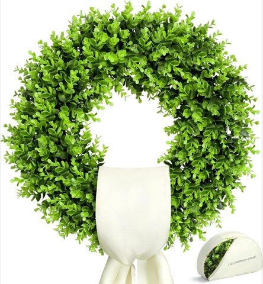
24 Inch Boxwood Wreath for Front Door with Sash, Large Artificial Greenery
Shop on AmazonHow to Actually Decorate a Porch for Christmas
Start with the biggest pieces first, a wreath or door decoration, then bring in garland, planters, lanterns, trees, a rug, and smaller accessories after that.
A small porch might only need a wreath, a pair of lanterns, and one planter to feel finished. A larger porch has room for separate zones around the door, the stairs, a seating area, and the railings.
Decorating vertically helps a smaller porch feel fuller without eating up floor space: hang wreaths, wrap the railings, frame the door with garland, and set a tall tree beside the entrance instead of piling decorations on the ground.
Combining greenery with lanterns and ambient lighting does a lot of the heavy lifting here too.
Lighting genuinely changes everything about a porch. One that looks perfectly ordinary at three in the afternoon can look completely magical by seven at night, basically the Christmas decorating equivalent of changing into your good outfit.
28 Christmas Porch Decor Ideas
Here they are, running from a fully layered display all the way down to one classic wreath.
1. A Fully Layered Porch, Everything Working Together
For the grand finale version, combine your favorite elements instead of picking just one or two.
Start with the door wreath, then add garland around the doorway, matching planters, two lanterns, a small tree, a seasonal doormat, and warm white lights.
Keep the color palette tight and repeat the same greenery throughout. The goal isn't to use everything you own, it's to make every single piece look like it belongs there.
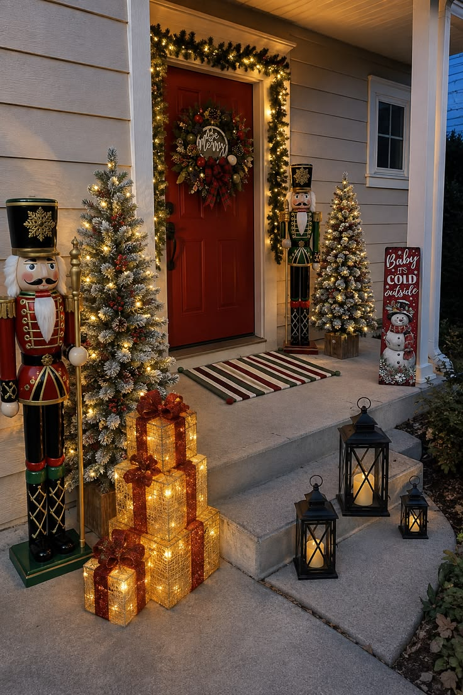
22 Inch Pre-Lit Be Merry Christmas Wreath with Red Black Buffalo Plaid Bow
Shop on AmazonHourleey Set of 4 Pre-Lit Christmas Gift Boxes, Warm White, 70 LED
Shop on Amazon2. A Minimalist Porch That Still Feels Festive
Sometimes less really does look better.
One beautiful wreath, a simple garland, two planters, and warm white lights cover everything you actually need. Skip the giant signs and the dozens of extra decorations.
A minimalist porch can still feel incredibly festive, because every piece gets room to actually breathe instead of competing with ten others.
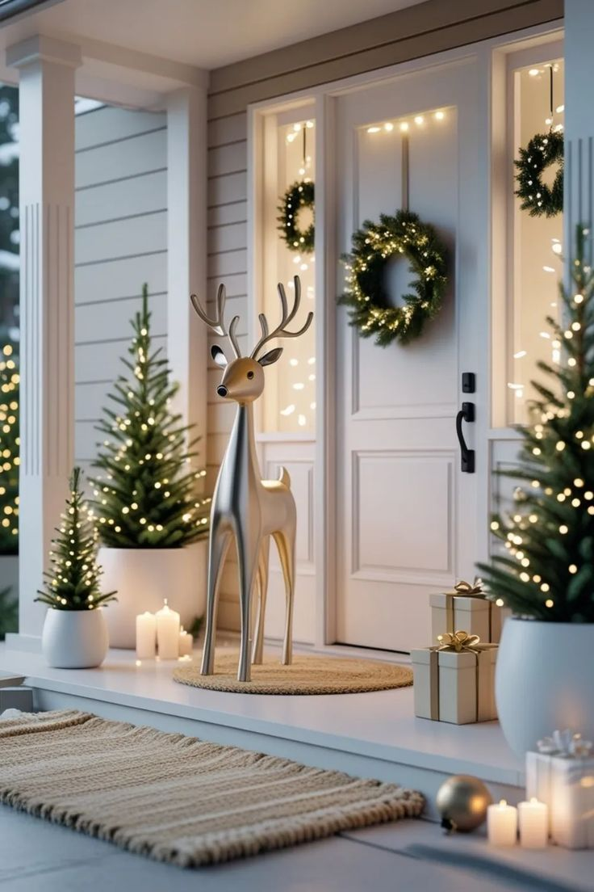
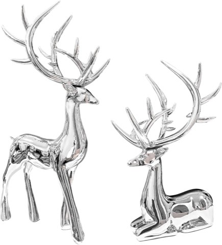
2 Pcs Silver Christmas Reindeer Figurines, Resin Standing and Sitting Statues
Shop on Amazon3. A Hot Cocoa Station for Outdoor Entertaining
If you entertain outdoors during winter, a small console or table can turn into its own hot cocoa station.
Mugs, jars of cocoa mix, candy canes, marshmallows, and a festive little sign cover the basics. Keep anything edible protected from weather and insects.
This idea combines decor with actual function, which tends to make it worth the extra setup.
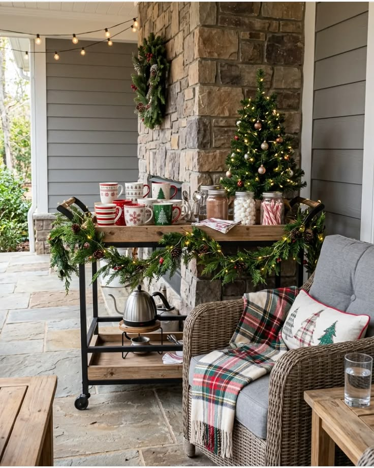
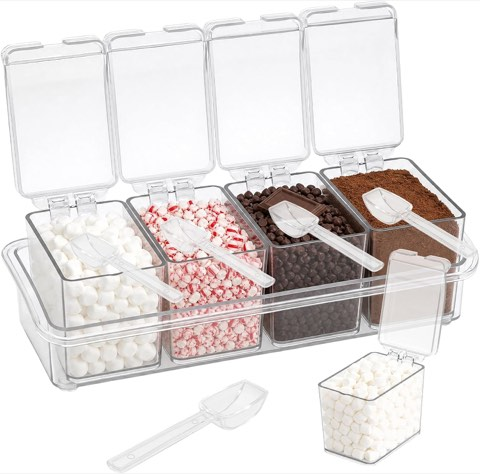
Hot Cocoa Bar Supplies Kit, Clear Acrylic 4-Cell Topping Organizer with Lids and Spoons
Shop on Amazon4. Oversized Nutcrackers at the Door
Large nutcrackers bring a playful energy to a Christmas entrance.
Place one or two beside the front door, or next to your Christmas trees if you have them. Oversized versions work especially well if your porch has the space for them.
They're a bold choice, but a pair of nutcrackers flanking the door tends to be exactly the kind of detail people remember.
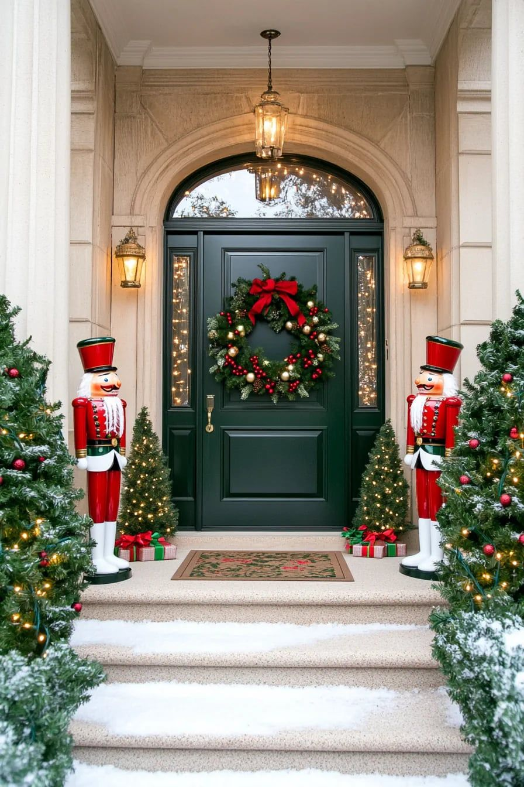
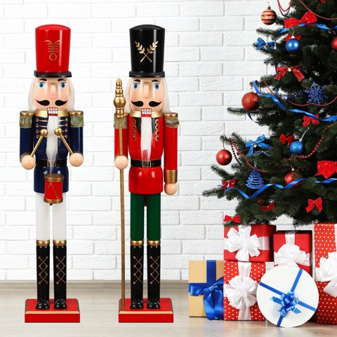
DoubleFill 2 Pcs 32 Inch Wooden Nutcracker Yard Decor, Soldier and Knight
Shop on AmazonSuzile 4 Pcs 12 Inch Christmas Nutcracker Figures, Wooden Soldiers
Shop on Amazon5. A Snowy White Winter Wonderland
White, silver, frosted greenery, and soft blue create a genuine winter-wonderland feel.
Flocked trees, white ornaments, snowy wreaths, and cool-toned lights all build toward that same look.
This direction looks especially beautiful against a darker exterior color, where the white and silver really get to stand out.
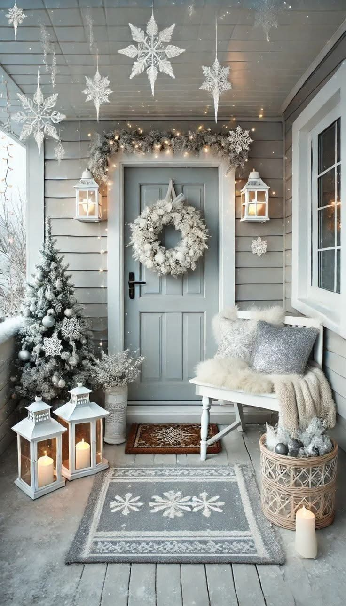
YITAHOME 6 Ft Pre-Lit Snow Flocked Artificial Christmas Tree with Remote
Shop on Amazonkockuu White Snowflake Christmas Ornaments for Tree and Crafts
Shop on Amazon6. A Cozy Seating Area Worth Sitting In
If your porch has the space, make it somewhere you actually want to sit for a while.
A chair or bench, a festive cushion, and a warm throw blanket go a long way. A small side table can hold a lantern or a little seasonal arrangement.
Festive throws and genuinely comfortable seating are what make a front porch feel inviting during the holidays, not just decorated.
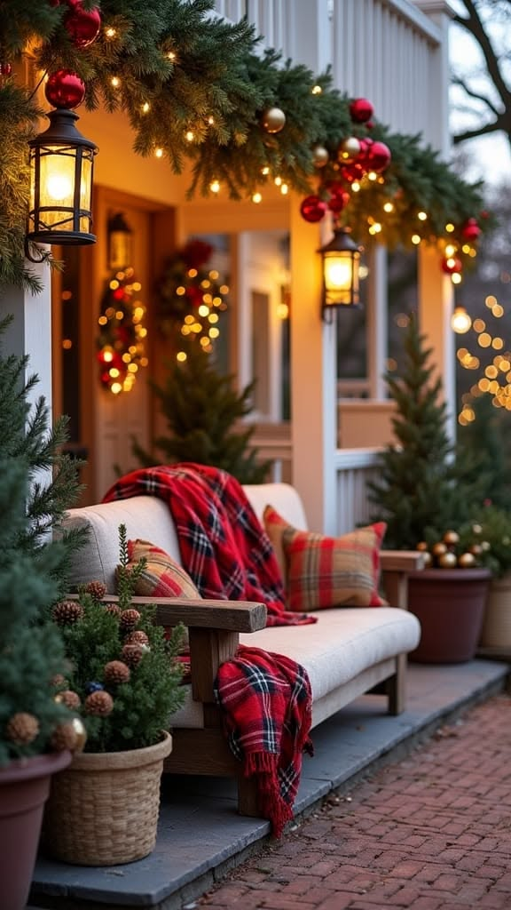

BEAUTEX Red Sherpa Fleece Throw Blanket, Soft, Fluffy and Cozy
Shop on Amazon7. Red Berries for a Simple Pop of Color
Red berries deliver a simple, reliable burst of Christmas color.
Tuck berry stems into wreaths, planters, garlands, and trees wherever you need a little more warmth.
They work especially well when you want a classic look without leaning too heavily on ornaments.
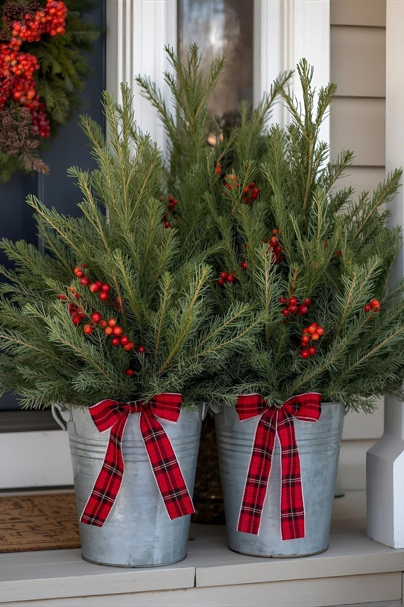
50 Pack Artificial Red Berry Picks and Stems for Christmas Decor
Shop on Amazon24 Pieces Frosted Artificial Holly Berry Stems, 9 Inch, Snowy Red Berry Picks
Shop on Amazon8. Gold Accents for a More Elegant Feel
Gold works its way in through ornaments, ribbon, lanterns, bells, or small decorative objects.
Pairing gold with evergreen and cream creates an elegant look without much effort.
You don't need much of it either, a few metallic accents can make natural greenery feel instantly more polished.
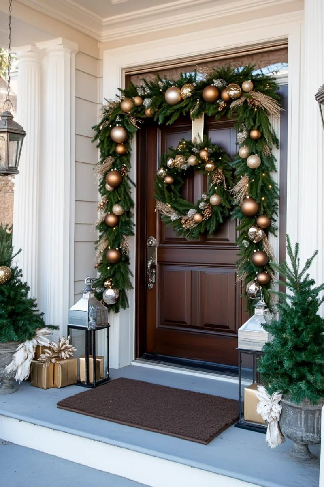
Set of 3 Giant Metal Christmas Bells, 7.1, 9.84 and 12.2 Inch
Shop on Amazon9. More Than One Wreath
There's no real rule that says you're limited to a single wreath.
Hang smaller wreaths on windows, porch columns, or even the backs of outdoor chairs. Repeating the same wreath style ties the whole look together.
Faux wreaths keep things consistent, while mixing in natural greenery gives the display a slightly more relaxed feel.
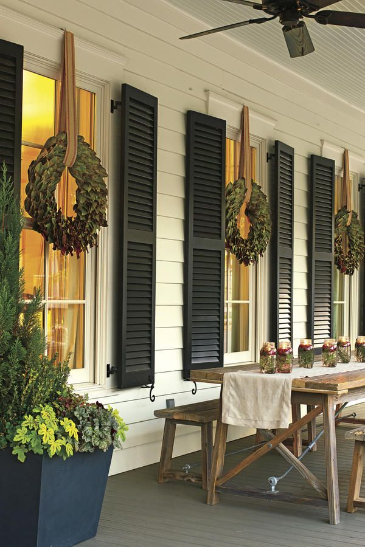
VIS'V Heavy Duty Clear Suction Wreath Hanger, 22 LB, Large, 2 Pcs
Shop on Amazon10. Evergreen Trees in Woven Baskets
Large woven baskets holding small potted evergreen trees work beautifully in place of a traditional planter.
Wrap the trees in warm white lights and let the baskets themselves add texture, they soften the harder architectural lines around a front door.
This idea also holds up well after Christmas, since you can remove the obviously holiday-specific details and keep the greenery going.
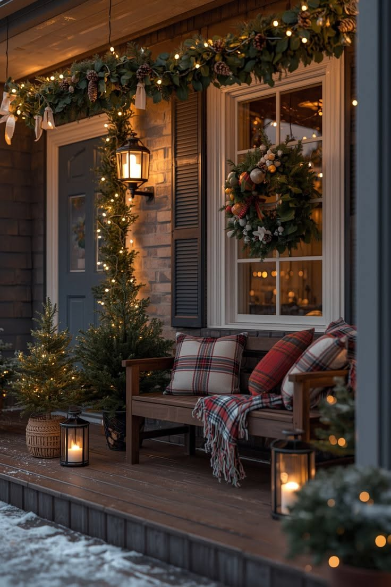
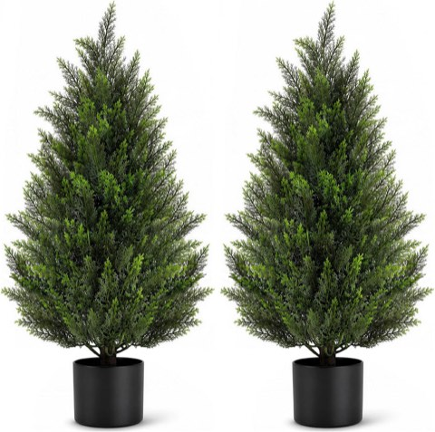
VIVATREES 3 Ft Artificial Topiary Cedar Trees, UV-Resistant Outdoor Evergreens
Shop on Amazon11. Don't Skip the Doormat
The floor is easy to forget about entirely.
A Christmas doormat adds personality without taking up any real space, look for simple phrases, traditional patterns, snowflakes, plaid, or evergreen designs.
Layering it over a larger outdoor rug works well if you've got enough room for both.
Merry Christmas Doormat, 30 x 17 Inch, Coir Welcome Mat with Non-Slip Backing
Shop on Amazon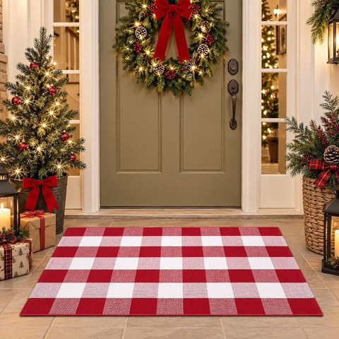
Christmas Red and White Plaid Door Mat, 28 x 43 Inch, Hand-Woven Cotton
Shop on Amazon12. Let Warm White Lights Do the Work
Sometimes you genuinely don't need more stuff.
Wrap warm white lights around garland, railings, trees, and planters, and let the lighting itself create the atmosphere.
Combining mini lights with greenery and lanterns builds exactly the kind of ambient glow that makes a porch feel warm even with the actual porch lights switched off.
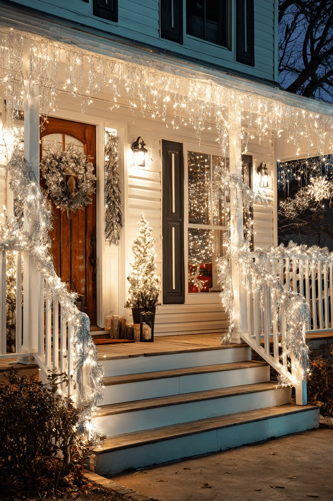
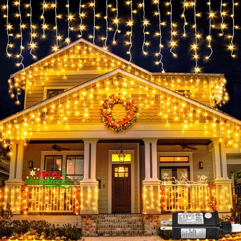
Warm White Icicle Lights for Outside, 66 Ft, 640 LEDs, Outdoor Christmas Lights
Shop on Amazon13. Three Small Trees Instead of One Big One
A trio of small trees can do more for a porch than one large one.
Use different heights and group them together in baskets or planters, keeping the decorations themselves fairly simple so the arrangement doesn't turn visually chaotic.
Odd-numbered groupings tend to look more natural than even ones, which is part of why three trees works so well here.
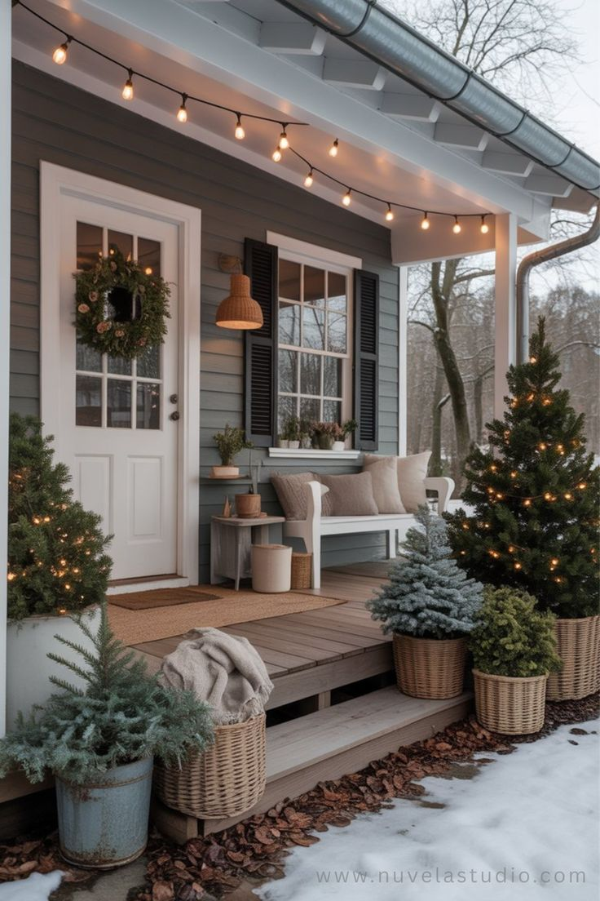
Set of 3 Pre-Lit Mini Christmas Trees, 22 Inch, Tabletop Artificial Trees
Shop on AmazonRectangular Small Seagrass Baskets, Set of 3
Shop on Amazon14. An Old Sled Leaned Against the Wall
Got an old sled sitting around somewhere?
Lean it against the wall and decorate it with evergreen branches, ribbon, pinecones, or a small wreath.
It's a detail that works especially well for rustic, farmhouse, and traditional-leaning Christmas porches.
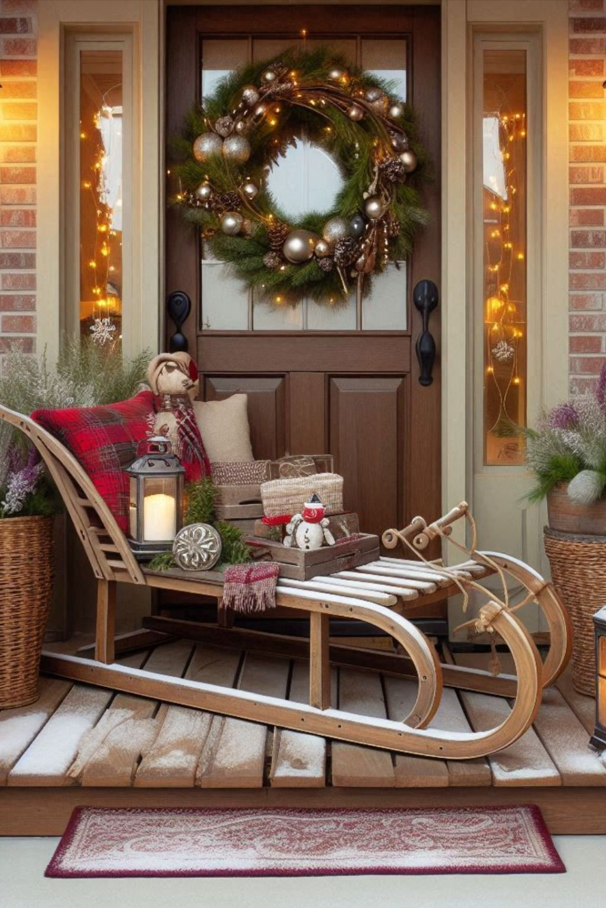

15. A Little Vignette of Wrapped Presents
Decorative wrapped boxes can build a small Christmas vignette of their own.
Stack several beside a tree or under a porch bench, using weather-resistant materials or empty faux packages if your porch gets rain or snow.
Sticking to your existing color palette keeps the presents looking intentional, rather than like actual last-minute shopping leftovers someone forgot to bring inside.
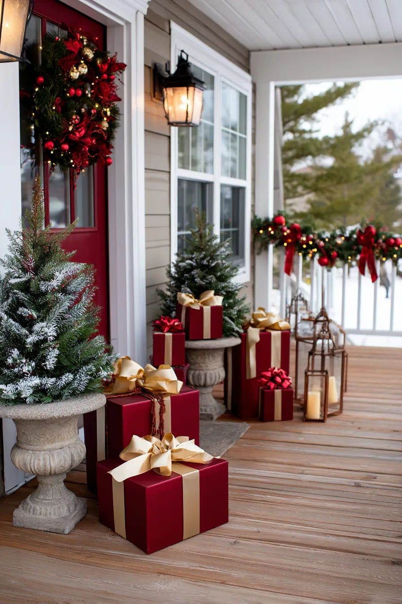
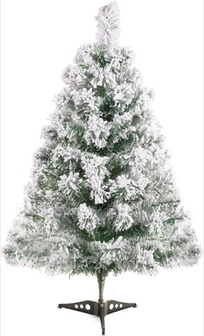
2 Ft Snow Flocked Artificial Tabletop Christmas Tree with Plastic Stand
Shop on Amazon16. One Giant Bow Changes Everything
A giant bow can transform a plain doorway almost on its own.
Attach one to a wreath, a garland, a railing, a planter, or even directly to the front door. Velvet, linen, plaid, or traditional ribbon all work depending on your style.
Oversized bows create real impact without adding any actual visual clutter, which is part of why they're worth the splurge.
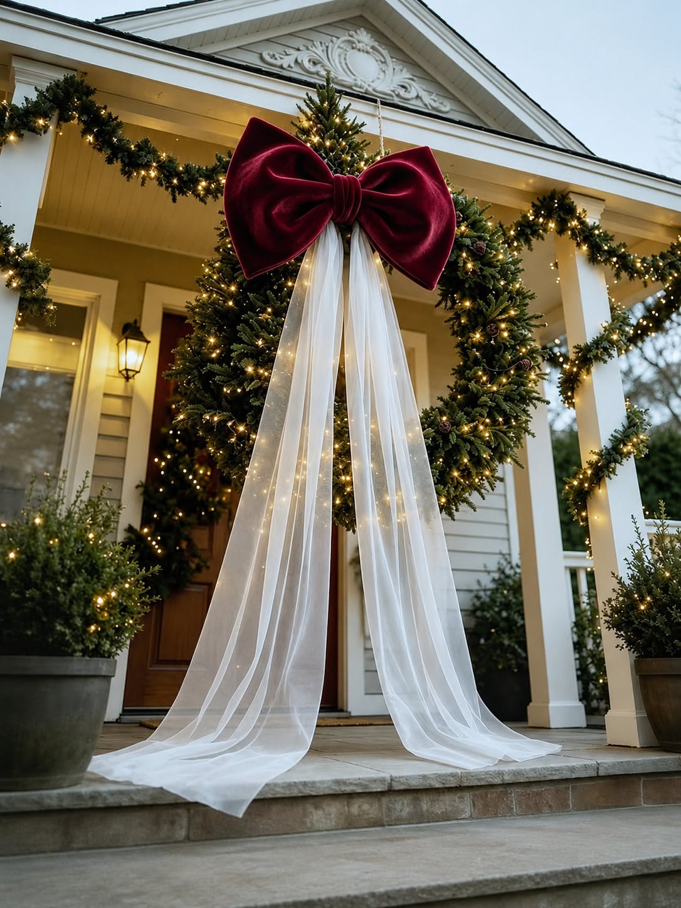
Zeyune Giant Velvet Christmas Bow, 39 x 59 Inch, Burgundy
Shop on AmazonWhite Tulle Fabric Roll, 6 Inch by 100 Yards (300 Feet)
Shop on Amazon17. An Elegant, Neutral Take on Christmas
Not every Christmas porch needs to lean on red.
Cream, beige, taupe, white, soft green, and natural wood make for a genuinely elegant alternative. Group a few small trees of different heights in aged stone urns or a galvanized bucket, then add warm white lights and one simple black lantern.
This direction works particularly well if the inside of your home already leans toward a neutral decorating style.
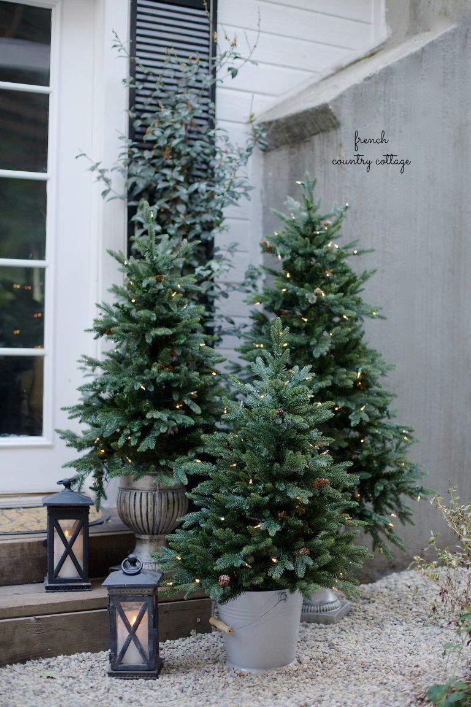
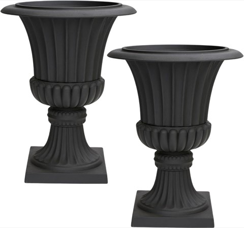
Urn Planters, 22 Inch, Set of 2, Tall Stone-Resin Pedestal Planters for Outdoor Plants
Shop on Amazon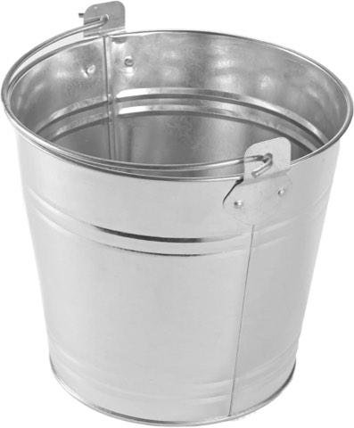
American Metalcraft Galvanized Steel Pail with Handle, 1.16 Gallon, 8 Inch
Shop on Amazon18. Birch Branches for Height and Texture
Birch branches bring real height and a distinctly winter texture to a porch.
Place them inside tall planters alongside evergreen stems and warm lights. The white bark looks especially striking against a darker door.
A few red berries tucked in for contrast finish the look nicely.
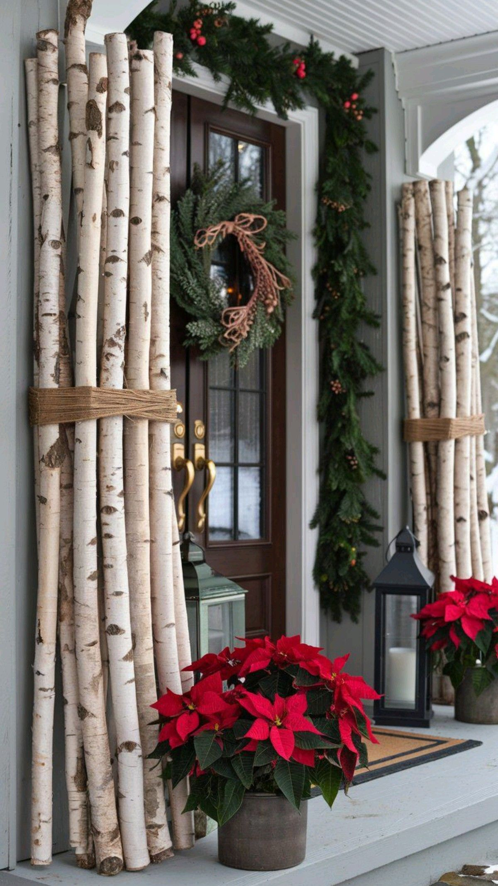
30 Pcs Real Dried White Birch Twigs, 17 Inch, Decorative Branches for Vases
Shop on Amazon
19. Plaid, Used With Restraint
Plaid works its way in through ribbons, cushions, blankets, or a doormat.
Red-and-black buffalo check leans farmhouse, while red-and-green tartan feels more traditionally Christmas.
Repetition is the key here, one plaid pattern shown up in several small places looks far better than five different patterns all competing at once.
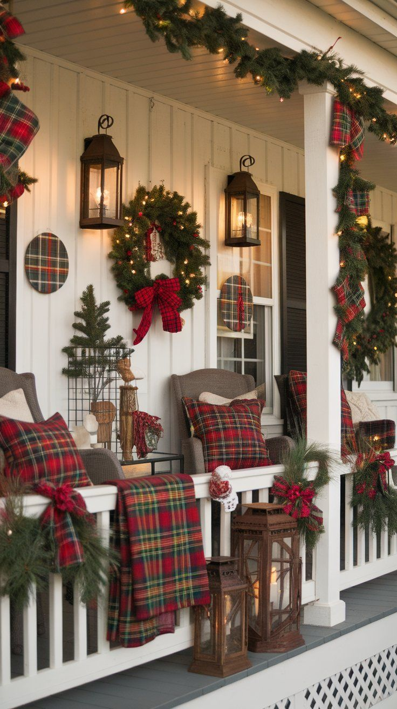
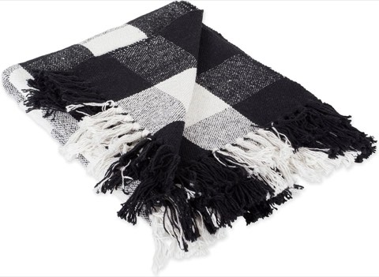
DII Buffalo Check Rustic Farmhouse Throw Blanket with Tassels, 50 x 60, Black and White
Shop on Amazon20. Red Lanterns for Traditional Color
Red lanterns offer an easy way to bring in traditional Christmas color.
Group them in twos or threes at different heights, add flameless candles inside, and surround the bases with greenery.
The result feels genuinely festive without requiring a single extra ornament.
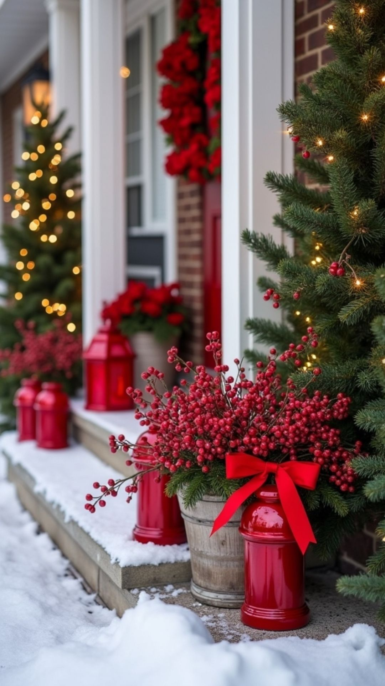
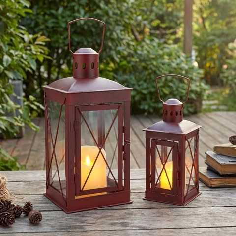
TRIROCKS Set of 2 Decorative Candle Lanterns, 14 and 10 Inch, Antique Red
Shop on Amazon21. A Scandinavian, Pared-Back Look
Keep things simple with white, green, wood, and natural textures.
A minimalist wreath, simple evergreen branches, wooden ornaments, neutral planters, and warm white lights cover the whole look.
This style works beautifully when you want Christmas decor on the porch without it ever looking overly colorful.
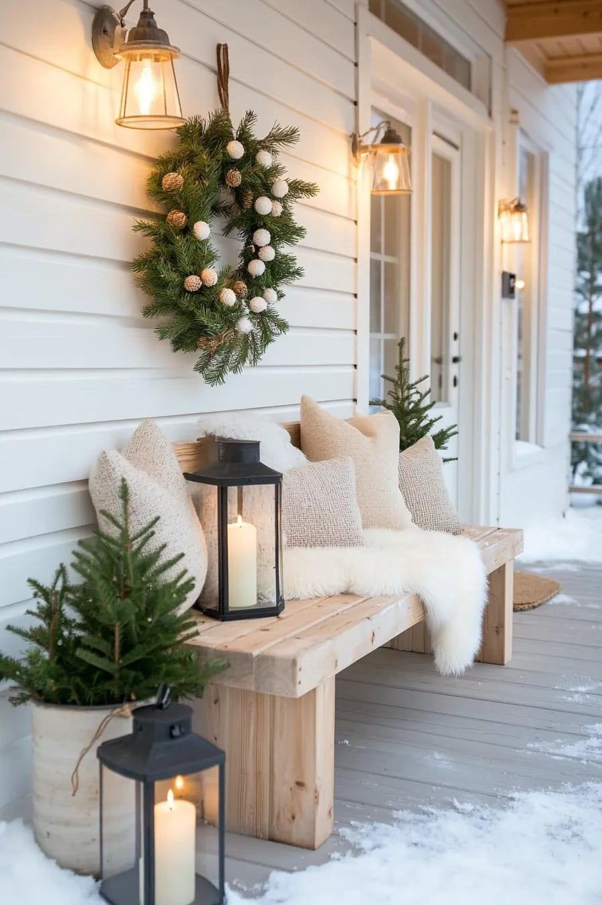
Idyllic 22 Inch Greenery Winter Wreath with Snowy Pine Cones and Succulents
Shop on Amazon22. Lanterns for Instant Warmth
Lanterns add warmth to an outdoor Christmas display almost instantly.
Place two large ones beside the door, along the stairs, or near a seating area, and add flameless candles for a soft glow.
Warm white lights or candles here make the surrounding greenery look richer once it gets dark.
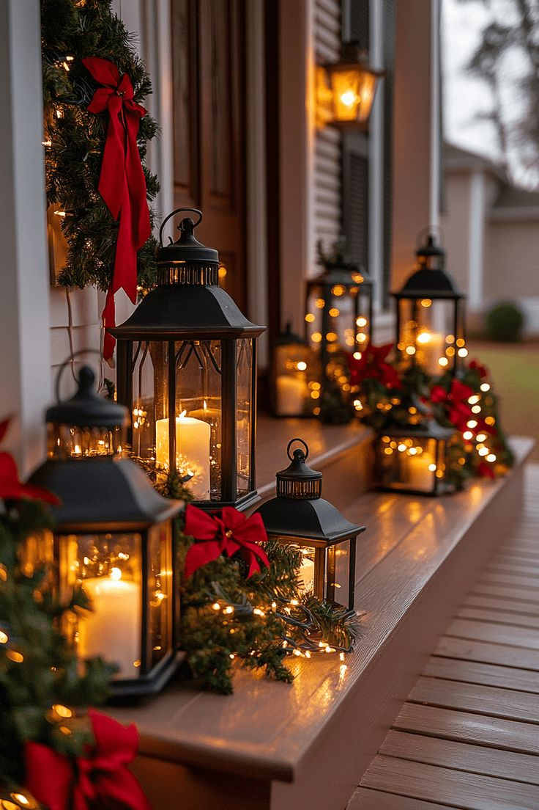
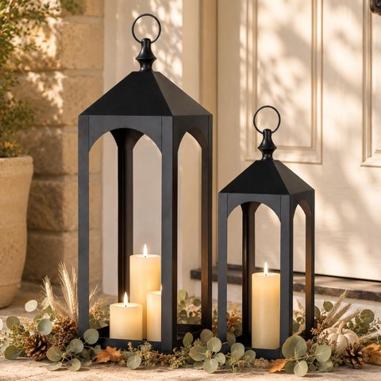
24 and 17 Inch Large Black Outdoor Floor Lanterns, Set of 2, Porch Decor
Shop on AmazonTyawon Glass Battery Operated LED Flameless Candles with Remote and Timer
Shop on Amazon23. A Relaxed, Rustic Farmhouse Look
For a relaxed farmhouse feel, let a berry-covered wreath and glowing lanterns do most of the decorating.
Mix red berries with pine branches, mini trees tucked into wood crates, and a plaid blanket for texture. A wooden sign or vintage lantern finishes it off.
Pinecones, fresh greenery, lanterns, plaid, and other natural materials are the backbone of this whole look.
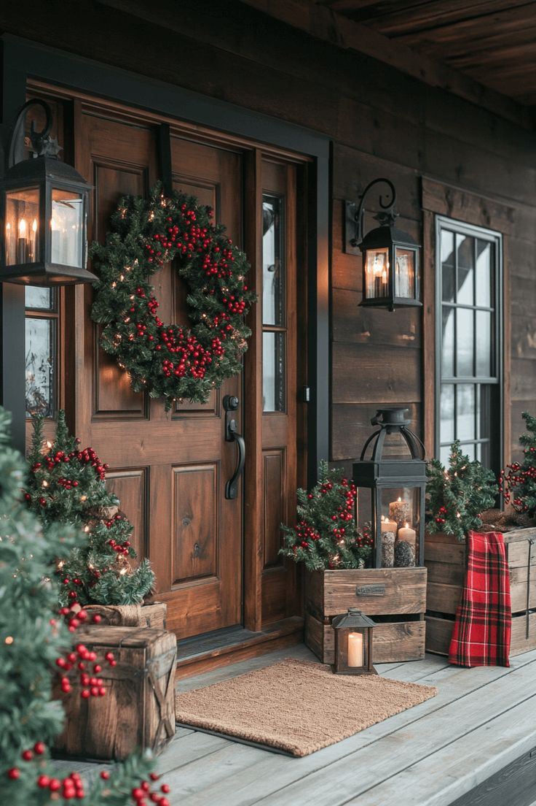
Set of 4 Large Torched Wood Nesting Decorative Crates, Rustic Farmhouse
Shop on Amazon
24. Matching Planters on Either Side of the Door
Two large planters, one on each side of the doorway, do a lot of work on their own.
Fill them with evergreen branches, pinecones, berries, birch branches, or faux Christmas stems. Matching planters create symmetry, which instantly makes an entrance feel more polished.
You don't need expensive planters either, existing pots turn into Christmas planters with just a few branches and decorations added.
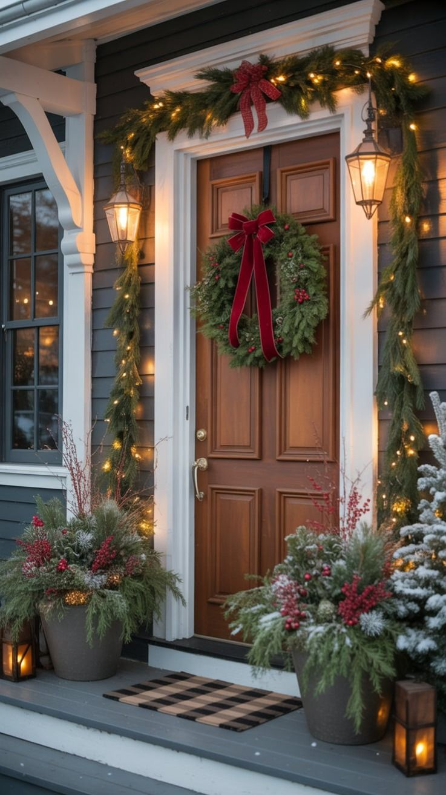
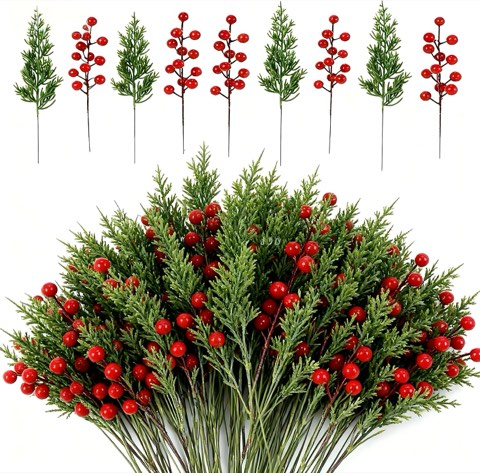
Artificial Christmas Pine Branches with Red Berry Picks, 45 Greenery Stems and 15 Berries
Shop on Amazon25. A Small Tree Right by the Door
A small Christmas tree can make a porch feel genuinely cozy almost immediately.
Place one beside the front door and decorate it with warm white lights, simple ornaments, or ribbon. A basket or galvanized container works fine as the base.
This idea works especially well if you've got a little extra floor space to spare.
National Tree Company 3 Ft Pre-Lit Nordic Spruce Mini Christmas Tree
Shop on AmazonRocinha Rattan Christmas Tree Collar Basket, Rustic Handcrafted Tree Ring
Shop on Amazon26. Garland Framing the Entire Doorway
Framing the whole doorway with evergreen garland delivers that classic Christmas-card feeling almost instantly.
Faux garland works well if you want something reusable, while fresh greenery is worth it if you love the scent and texture.
A few pinecones and small ornaments are plenty, let the greenery itself stay the actual star of the display.
National Tree Company 9 Ft Pre-Lit Crestwood Spruce Christmas Garland
Shop on Amazon24 Pieces Natural Pine Cones with Wired Stems, Various Sizes, Christmas Decor
Shop on Amazon27. One Oversized Wreath, Nothing Else Needed
Going big with a single wreath can carry the whole look on its own.
An oversized wreath creates a dramatic focal point without requiring much additional decoration, pine, eucalyptus, cedar, berries, pinecones, or ribbon all work well.
If your door looks a little empty, check the wreath's size before adding anything else. A bigger wreath is often the only fix you actually need.
36 Inch Large Pre-Lit Christmas Wreath with Lights for Outdoor
Shop on AmazonLarge Red Velvet Christmas Bows for Garland, Wreaths and Tree Decor
Shop on Amazon28. Classic Red and Green, Done Simply
You can never really go wrong with classic red and green.
Use an evergreen wreath with red berries, then repeat that same red through ribbons, pillows, ornaments, or planters.
This combination especially stands out against white, cream, gray, or natural wood homes. Keep the greenery slightly loose instead of arranging every branch perfectly, a little imperfection makes the whole thing feel more natural.
24 Inch Christmas Wreath with Red Berries, Eucalyptus and Pinecones for Front Door
Shop on AmazonRABUSOFA Merry Christmas Lumbar Pillow Cover, 12 x 20 Inch, Red
Shop on AmazonHow to Make Christmas Porch Decor Look Expensive
You don't need an enormous decorating budget to end up with a porch that looks polished.
Scale and repetition matter far more than quantity. One large wreath consistently creates more impact than three tiny decorations scattered across a door.
A simple formula covers most of it, and it holds up no matter what style you're working in:
- One strong focal point
- Two matching or coordinated planters
- One type of greenery
- One accent color
- Warm lighting
- One or two textural accessories
A similar quick styling approach, built around an oversized wreath, matching planters, and lanterns, keeps showing up in porch-decorating advice for good reason. It works.
Reusing what you already own helps too. Lanterns, baskets, blankets, planters, outdoor rugs, and even old branches can all become part of a Christmas porch without a single new purchase.
Budget-friendly porch makeovers built around reused lanterns and greenery tend to look just as good as the ones built entirely from scratch, if not better.
Christmas Porch Lighting Safety Matters
Pretty lights mean nothing if you're careless with them.
Before hanging anything, inspect your light strings for cracked sockets, exposed wires, damaged insulation, or loose connections. Outdoor-rated lights belong outside, and outdoor decorations should be plugged into GFCI-protected outlets.
Turning holiday lights off before bed or before leaving home is also worth building into the routine. A few basics are worth keeping in mind:
- Use lights specifically rated for outdoor use
- Check cords and sockets before installation
- Keep electrical connections away from water
- Use outdoor-rated extension cords when necessary
- Secure lights with appropriate hooks or insulated fasteners
- Turn lights off when you leave or go to bed
- Choose flameless candles around greenery and other combustible decorations
None of this takes much time, so there's really no good reason to skip it.
BN-LINK Outdoor 24-Hour Mechanical Timer Outlet, 2 Grounded Outlets
Shop on AmazonTiFFCOFiO Waterproof Indoor Outdoor Extension Cord, 25 Feet
Shop on AmazonHow to Choose the Right Christmas Porch Decor
Before buying anything, stand outside and actually look at your porch from the street.
What looks empty? What already carries enough visual weight on its own? Where does your eye naturally land first?
Your home's architecture matters too. A traditional house can handle classic red and green just fine, while a more modern exterior often looks better with neutral greenery, black accents, and warm lighting.
Weather is worth thinking through as well, since outdoor Christmas decor has to handle wind, rain, snow, sun, or whatever else winter decides to throw at it.
For a small porch, prioritize vertical elements and keep the floor clear. For a wider porch, build multiple decorative zones instead of spreading tiny decorations thin across the whole space.
Final Thoughts on Christmas Porch Decor
The best Christmas porches don't necessarily come from the biggest budget or the most decorations. They tell one clear visual story from the sidewalk all the way to the front door.
Start with greenery, add one strong focal point, bring in warm lighting, and then layer in planters, lanterns, trees, bows, textiles, or seasonal accessories from there.
Choose whatever style actually feels like you, whether that's classic red and green, Scandinavian neutrals, or a porch that looks like Santa parked his sleigh there by accident.
Your porch doesn't need to look perfect. It just needs to make you smile every time you come home, which, honestly, is what Christmas decorating should do in the first place.